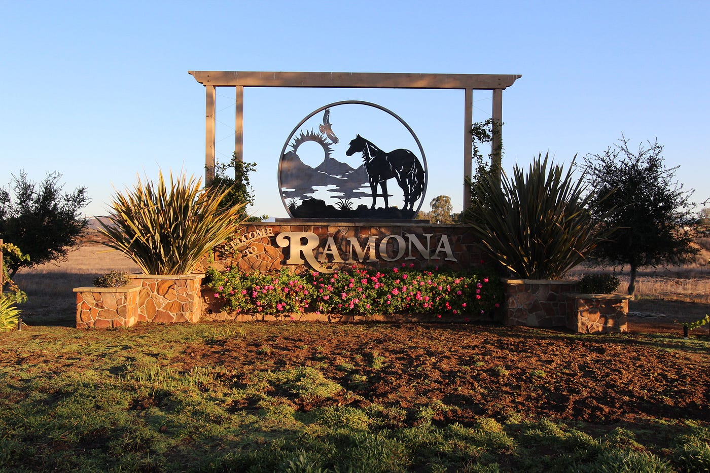

Derek Nielsen
About Me
Hello! My name is Derek Nielsen. I’m studying web development and enjoy building interactive and visually appealing websites.
My Interests

I’m passionate about design, coding, and adventure. When I’m not coding, I enjoy sketching my ideas for projects. This inspires my creativity in web projects.